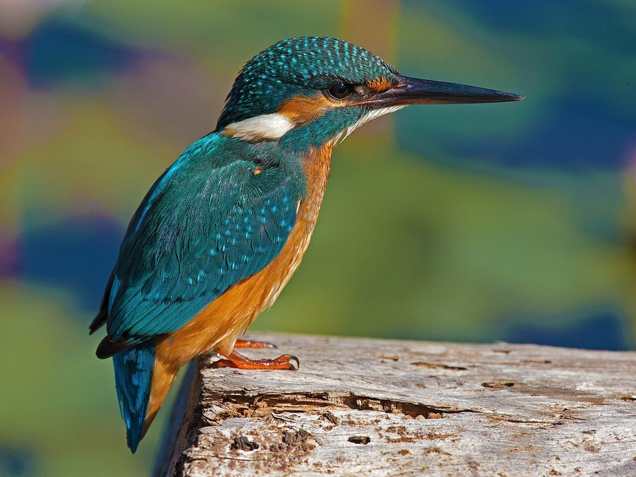

राम चिरैयाCommon Kingfisher
Alcedo atthis · Alcedinidae · BRD-0010

- Scientific name
- Alcedo atthis (Linnaeus, 1758)
- Family
- Alcedinidae
- Hindi
- राम चिरैया / किलकिला
- Status here
- native
- IUCN
- LC
When to look कब देखें
Present all year.
राम चिरैया / Common Kingfisher
Alcedo atthis (Linnaeus, 1758) — Alcedinidae
राम चिरैया — नदी और तालाब का रत्न है। नीला-नारंगी, चमकीला, मात्र 16 से.मी. — पर यह सबसे कुशल मछुआरों में से एक है। यह पक्षी स्वच्छ जल का जैव-संकेतक है — जहाँ यह दिखे, पानी अभी प्रदूषण-मुक्त है। पानी के ऊपर स्थिर हवाई लटकने (hovering) और फिर बिजली की गति से गोता लगाने की क्षमता इसे प्रकृति के सबसे सटीक शिकारियों में रखती है।
हिंदी परिचय Hindi Overview
राम चिरैया (Alcedo atthis) नदी और तालाब का रत्न है। नीला-नारंगी, चमकीला, मात्र 16 से.मी. — पर यह सबसे कुशल मछुआरों में से एक है। यह पक्षी स्वच्छ जल का जैव-संकेतक है — जहाँ यह दिखे, पानी अभी प्रदूषण-मुक्त है। पानी के ऊपर स्थिर हवाई लटकने (hovering) और फिर बिजली की गति से गोता लगाने की क्षमता इसे प्रकृति के सबसे सटीक शिकारियों में रखती है।
Quick Identification त्वरित पहचान
| Feature | Description |
|---|---|
| Size | Small, compact bird (16–17 cm total length); short-tailed, large-headed |
| Upperparts | Iridescent electric cobalt-blue to turquoise; bright blue back stripe |
| Underparts | Rich warm orange-chestnut (rufous) underparts |
| Bill | Long, straight, black, dagger-like bill |
| Flight | Very fast, direct, low over water; appears as a flashing blue streak |
| Voice | Sharp, high-pitched chee-chee whistle, usually given in flight |
Field tip: Look for a bright metallic blue streak flying very low and straight over a pond or river bank, accompanied by a sharp whistle. Perched birds sit alertly on overhanging branches or wires over water.
Morphology आकारिकी
Biometrics (subspecies bengalensis, northern India — the form in eastern UP):
| Measurement | Range |
|---|---|
| Total length | 160–170 mm |
| Wing (flattened chord) | 68–73 mm |
| Tail | 31–36 mm |
| Tarsus | 9–11 mm |
| Bill (culmen from base) | 33–38 mm |
| Weight | 25–35 g |
Body: Compact and heavy-headed relative to body size. Wings short and rounded. Tail very short. The overall silhouette is a large head on a cigar body.
Plumage: Upperparts cobalt-blue with turquoise iridescence — the colour changes intensity as the light angle changes (structural colour, not pigment). Orange-chestnut underparts from chin to undertail. White throat patch and white cheek-spot. Bill long (3–4 cm), straight, dagger-shaped, black. Legs red. Eyes dark brown.
Sexual dimorphism: Female has orange-red base to the lower mandible — male's bill is all-black. Otherwise identical.
Flight: Rapid, direct, low — the bird is too compact to soar. Uses exposed perches (overhanging branches, rocks, wires over water) as hunting vantage points.
Vocalisations
The Common Kingfisher's calls are loud and sharp, designed to carry over water bodies.
- Flight whistle: A high-pitched, penetrating chee-chee or tsee-tsee whistle given when startled or in flight.
- Excitement call: A rapid, metallic chrit-chrit-chrit when defending territory or during courtship display.
- Alarm whistle: A sharp, louder single-note whistle given when a raptor or other threat is sighted near the water.
Ecological Role पारिस्थितिक भूमिका
Precision predator: Kingfisher hunts by perch-and-plunge. From a height of 1–3 m, it locates a fish or aquatic insect, adjusts for water refraction (the apparent position of underwater prey is offset from the true position), then dives at 40 km/h, nictitating membrane covering the eye on entry. The bill closes around prey underwater; the bird returns to its perch, beats the prey to stun it, then swallows it head-first.
Refraction compensation: Kingfishers appear to "see through" water refraction — they adjust their strike angle to intercept the true (not apparent) position of submerged prey. This is a sophisticated neural computation that researchers have studied in detail.
Clean water indicator: Alcedo atthis requires clear water (to see prey), clean banks (to excavate nest burrows), and healthy aquatic invertebrate/fish populations. Its presence is used as a bioindicator of water quality. Disappearance of kingfishers from a pond or stream segment typically signals serious water quality degradation.
Nest: Excavates a horizontal tunnel (30–50 cm) into a vertical earthen riverbank. The nest chamber at the end is unlined — eggs laid on accumulated fish bones (regurgitated pellets). Both parents dig and incubate.
Life Cycle / Phenology जीवन चक्र
- January–February: Territory establishment; pairs form.
- March–May: Nesting — tunnel excavated in riverbank; 5–7 glossy white eggs.
- April–June: Incubation (19–21 days); chick rearing.
- June–July: Fledglings emerge; family group briefly together.
- August–December: Territorial; individuals hold fishing territories year-round.
Fishing rate: A breeding pair raising chicks can catch 100+ fish per day. Each parent feeds chicks every 15–20 minutes at peak demand. The nest tunnel is recognisable by the strong smell of fish and white droppings at the entrance.
Host Plants or Prey आहार
Primary prey:
- Small fish including juvenile Rohu (Labeo rohita) and Catla (Catla catla)
- Tadpoles and juvenile frogs (such as Skittering Froglets Euphlyctis cyanophlyctis)
- Aquatic insects: dragonfly larvae, water bugs, and beetles
- Freshwater shrimps and small crabs
Predators / Natural Enemies शत्रु
- Shikra (Accipiter badius) — attacks kingfishers perched on exposed branches
- Black-crowned Night Heron (Nycticorax nycticorax) — opportunistically targets nests at night
- Indian Rat Snake (Ptyas mucosa) — slides into bank tunnels to consume eggs/chicks
- Small Indian Mongoose (Herpestes edwardsi) — raids low-lying nest tunnels on banks
Agricultural / Human Relevance कृषि एवं मानव उपयोग
Fish pond conflict: Fish farmers (मछलीपालन) sometimes view kingfishers as pests in fingerling ponds — a single bird can take many small fingerlings per day. In reality, damage to commercial ponds is minimal compared to bird perception; commercial fish ponds typically use nets.
Water quality proxy: Forest Department and pollution control boards increasingly recognise kingfisher presence/absence as a cheap field indicator of water quality — no expensive testing needed for initial screening.
Cultural presence: राम चिरैया — "Ram's bird" — the name reflects an association with Rama (no specific mythology, but the "Ram" prefix is given to auspicious, beautiful birds and animals in eastern UP folk tradition).
Biomimicry: The kingfisher's low-drag bill profile, which prevents turbulence when entering water at speed, inspired the bullet-nose shape of the Shinkansen 500 Series (Japanese high-speed train) by engineer Eiji Nakatsu, reducing aerodynamic noise significantly. Classic nature-inspired engineering.
Expected Locally स्थानीय रूप से अपेक्षित
Not a field record. Written from published accounts for eastern Uttar Pradesh. No confirmed local sighting yet — if you have seen it, that is what the atlas needs.
अभी तक स्थानीय पुष्टि नहीं। यह विवरण प्रकाशित स्रोतों से है, किसी अवलोकन से नहीं।
Commonly found on the banks of Saryu and Rapti rivers in Basti district, as well as on mature village ponds with clear water. They are regularly observed perching on low overhanging branches or electricity wires over irrigation canals. Nests are located in vertical sandy-clay banks of streams and river bends.
Distribution वितरण
Global range: Widespread across Europe, North Africa, and Asia (from Siberia through Central Asia to South and Southeast Asia, and Japan); northern populations are migratory, wintering in warmer southern latitudes.
In India: Widespread and common across the entire country, including the plains and Himalayan foothills up to about 1,500 m elevation.
In Uttar Pradesh: Common resident throughout the state, associated with rivers, streams, lakes, ponds, and canals.
In Basti district / eastern UP: Common resident; found along Saryu, Rapti, and Kuwana rivers, and in clean village ponds, oxbow lakes (jhils), and agricultural channels.
Range notes: No significant range changes documented.
Research Questions शोध प्रश्न
- Is kingfisher presence/absence a reliable proxy for dissolved oxygen and turbidity levels in eastern UP ponds and rivers?
- How does water hyacinth (FLR-0013) coverage affect kingfisher hunting success and territory size?
- What is the minimum pond size and visibility depth that supports a resident kingfisher pair in Basti district?
- Can nest burrow density along Saryu riverbanks be surveyed to assess population health?
- Do individual kingfishers show site fidelity — returning to the same perch and stretch of water across years?
Similar Species मिलती-जुलती प्रजातियाँ
| Species | How to distinguish |
|---|---|
| Halcyon smyrnensis (White-throated Kingfisher) | Much larger; white breast; brown head and wings; blue only on back/wings |
| Ceryle rudis (Pied Kingfisher) | Black and white (no orange); hovers extensively over water |
| Halcyon pileata (Black-capped Kingfisher) | Black cap, white collar, purple-blue back; rare in eastern UP |
Taxonomy & Classification वर्गीकरण
Original description. Alcedo atthis was described by Carl Linnaeus in 1758 as Gracula atthis in Systema Naturae, 10th Edition, page 109. Type locality: Egypt. It was later placed in the genus Alcedo Linnaeus, 1758.
Subspecies. Seven subspecies are currently recognised:
| Subspecies | Authority | Range | Notes |
|---|---|---|---|
| A. a. bengalensis | Gmelin, 1788 | India, Nepal, Bangladesh, China, Southeast Asia | Eastern UP form — smaller and brighter blue-green upperparts |
| A. a. atthis | (Linnaeus, 1758) | Europe, North Africa, Middle East | Nominate form; slightly larger and greener |
| A. a. ispida | Linnaeus, 1758 | British Isles, western Europe | Less migratory |
| A. a. taprobana | Kleinschmidt, 1894 | Southern India, Sri Lanka | Bright blue upperparts, very small |
| A. a. floresiana | Sharpe, 1892 | Lesser Sundas | Darker blue |
| A. a. hispidoides | Lesson, 1837 | Sulawesi to New Guinea | Purple-tinged upperparts |
| A. a. salomonensis | Rothschild & Hartert, 1905 | Solomons | Darkest form |
Family and order placement. Belongs to the order Coraciiformes, family Alcedinidae (kingfishers), subfamily Alcedininae (river kingfishers). The family Alcedinidae contains roughly 115 species of kingfishers divided into three subfamilies.
Phylogenetic notes. Molecular phylogenetic studies place the genus Alcedo as a monophyletic lineage closely related to Corythornis and Ceyx.
IUCN status rationale. Assessed as Least Concern (LC) by the IUCN Red List. It has an extremely large range, but is sensitive to water pollution, river canalization, and decline in prey fish availability.
Photo Gallery फ़ोटो गैलरी
Note: Add field photos tomedia/species/common_kingfisher/
फोटो निर्देश: पानी में गोता लगाने की क्रिया, सुरंगनुमा घोंसले का प्रवेश द्वार, और चोंच में मछली पकड़े हुए।
Photos needed आवश्यक फोटो
- [ ] Perched on overhanging branch (शाख पर बैठा)
- [ ] Diving into water (गोता मारते हुए)
- [ ] With fish in bill (चोंच में मछली)
- [ ] Nest burrow entrance in bank (सुरंग घोंसला)
Atlas Connections संबंधित प्रजातियाँ
- Rohu — primary prey fish in ponds and rivers (FSH-0001)
- Catla — prey (fingerlings); conflict with fish farmers (FSH-0002)
- Water Hyacinth — habitat degrader; reduces kingfisher hunting success (FLR-0013)
- Kadam Tree — riverside perch tree; commonly used hunting perch (FLR-0022)
References सन्दर्भ
- Linnaeus, C. (1758). Systema Naturae per regna tria naturae. Editio Decima, Reformata. Laurentii Salvii, Holmiae, p. 109. [original description]
- Gmelin, J.F. (1788). Systema Naturae per regna tria naturae. Editio Decima Tertia. G.E. Beer, Lipsiae. [description of bengalensis]
- Ali, S. & Ripley, S.D. (1983). Handbook of the Birds of India and Pakistan. Vol. 4, pp. 78–82. Oxford University Press, New Delhi.
- Grimmett, R., Inskipp, C. & Inskipp, T. (2011). Birds of the Indian Subcontinent. 2nd ed. Christopher Helm, London.
- Nakatsu, E. (2004). Design of shinkansen nose — biomimetic inspiration from Alcedo atthis. J. Japan Society of Mechanical Engineers, 107, 1–6.
- BirdLife International (2024). Alcedo atthis. IUCN Red List of Threatened Species. Ver. 2024.
- GBIF Occurrence Data — Alcedo atthis, Uttar Pradesh (2010–2025).
Source file: species/fauna/birds/common_kingfisher.md